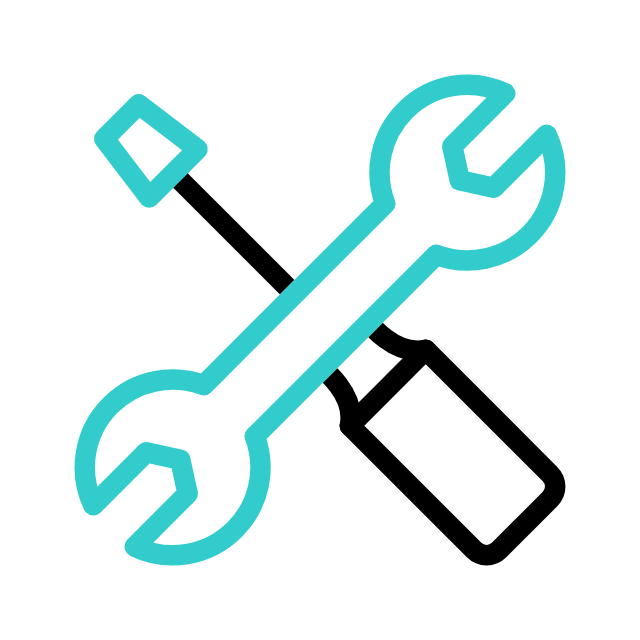

Infografia de TDD
Ventajas
- Escaso uso del depurador o debugger.
- Excelente relación calidad-tiempo.
- Avance en pequeños pasos continuados.
- Seguridad de código bien escrito.

Limitaciones
- Dificultad al implementar interfaces gráficas.
- Puede necesitar más tiempo del planeado.

Herramientas
- RSpec pruebas de lógica de negocio
- Capistrano para la automatización
- Jenkins para la integración continua
- Capybara para test de comportamiento
- xUnit para pruebas unitarias